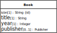
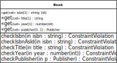

The starting point for making a JS class model is an OO class model like the one shown in Figure 8.10.
We now show how to derive a JS class model from this OO class model in four steps. For each class in the OO class model:
Add a «get/set» stereotype to all (non-derived) single-valued properties, implying that they have implicit getters and setters. Recall that in the setter, the corresponding check operation is invoked and the property is only set, if the check does not detect any constraint violation.
Create a check operation for each (non-derived) property in order to have a central place for implementing property constraints. For a standard ID attribute (such as
Book::isbn), two or three check operations are needed:A basic check operation, like
checkIsbn, for checking all syntactic constraints, but not the mandatory value and the uniqueness constraints.A standard ID check operation, like
checkIsbnAsId, for checking the mandatory value and uniqueness constraints that are implied by a standard ID attribute.If other classes have a reference property that references the class under consideration, add an ID reference check operation for checking the referential integrity constraint imposed on ID reference (or foreign key) attributes. For instance, since the
Book::publisherproperty referencesPublisherobjects, we need acheckNameAsIdRefoperation in thePublisherclass.
For a reference property, such as
Book::publisher, the check operation,Book.checkPublisher, has to check the implied referential integrity constraint by invokingPublisher.checkNameAsIdRef, and possibly also a mandatory value constraint, if the property is mandatory.
This leads to the following JS class model for Book,
where the class-level ('static') methods are shown underlined:
 |
 |
 |
We have to perform a similar transformation also for the class
Publisher. This gives us the complete JS class model derived
from the above OO class model, as depicted in the following class
diagram.